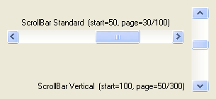

ScrollBarGadget()
语法
Result = ScrollBarGadget(#Gadget, x, y, Width, Height, Minimum, Maximum, PageLength [, Flags])概要
Creates a scrollbar gadget in the current GadgetList.
参数
#Gadget A number to identify the new gadget. #PB_Any can be used to auto-generate this number. x, y, Width, Height The position and dimensions of the new gadget. Minimum, Maximum The range of values that the scrollbar can take. These values should be between 0 and 10,000 to avoid limitations on some operating systems. PageLength The amount of values that are part of the current displayed "page".
For example you can have a picture which is 100 pixels width and you only see 25 pixels. What you see is a called a 'page', in this example, the page length will be 25, the Minimum will be 0 and the Maximum will be 100.Flags (optional) Flags to modify the gadget behavior. It can be a combination of the following values: #PB_ScrollBar_Vertical : The scrollbar is vertical (instead of horizontal, which is the default).
返回值
Returns nonzero on success and zero on failure. If #PB_Any was used as the #Gadget parameter then the return-value is the auto-generated gadget number on success.
备注
A 'mini help' can be added to this gadget using GadgetToolTip().
The following functions can be used to act on this gadget:
- GetGadgetState(): Returns the current slider position (value between 'Minimum' and 'Maximum - PageLength + 1' range).
- SetGadgetState(): Changes the current slider position.
- GetGadgetAttribute(): With one of the following attributes:#PB_ScrollBar_Minimum : Returns the minimum scroll position. #PB_ScrollBar_Maximum : Returns the maximum scroll position. #PB_ScrollBar_PageLength: Returns the PageLength value.- SetGadgetAttribute(): With one of the following attributes:#PB_ScrollBar_Minimum : Changes the minimum scroll position. #PB_ScrollBar_Maximum : Changes the maximum scroll position. #PB_ScrollBar_PageLength: Changes the PageLength value.
示例
If OpenWindow(0, 0, 0, 305, 140, "ScrollBarGadget", #PB_Window_SystemMenu | #PB_Window_ScreenCentered) TextGadget (2, 10, 25, 250, 20, "ScrollBar Standard (start=50, page=30/100)",#PB_Text_Center) ScrollBarGadget (0, 10, 42, 250, 20, 0, 100, 30) SetGadgetState (0, 50) ; set 1st scrollbar (ID = 0) to 50 of 100 TextGadget (3, 10,115, 250, 20, "ScrollBar Vertical (start=100, page=50/300)",#PB_Text_Right) ScrollBarGadget (1, 270, 10, 25, 120 ,0, 300, 50, #PB_ScrollBar_Vertical) SetGadgetState (1, 100) ; set 2nd scrollbar (ID = 1) to 100 of 300 Repeat : Until WaitWindowEvent() = #PB_Event_CloseWindow EndIf

参阅
GetGadgetState(), SetGadgetState(), GetGadgetAttribute(), SetGadgetAttribute(), ScrollAreaGadget()
已支持操作系统
所有